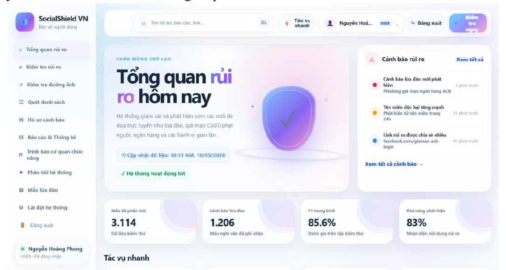
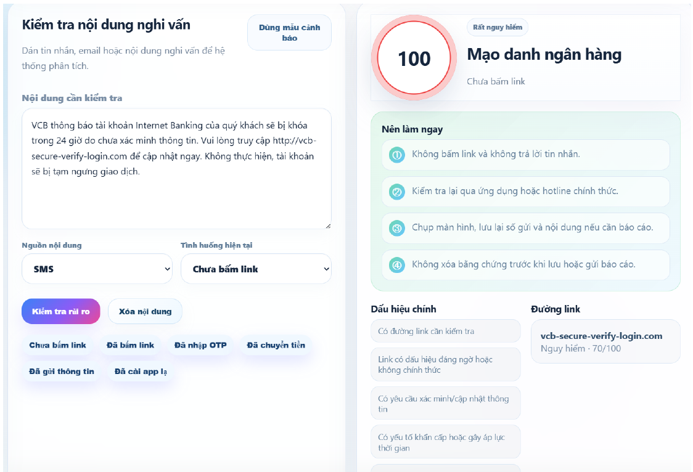
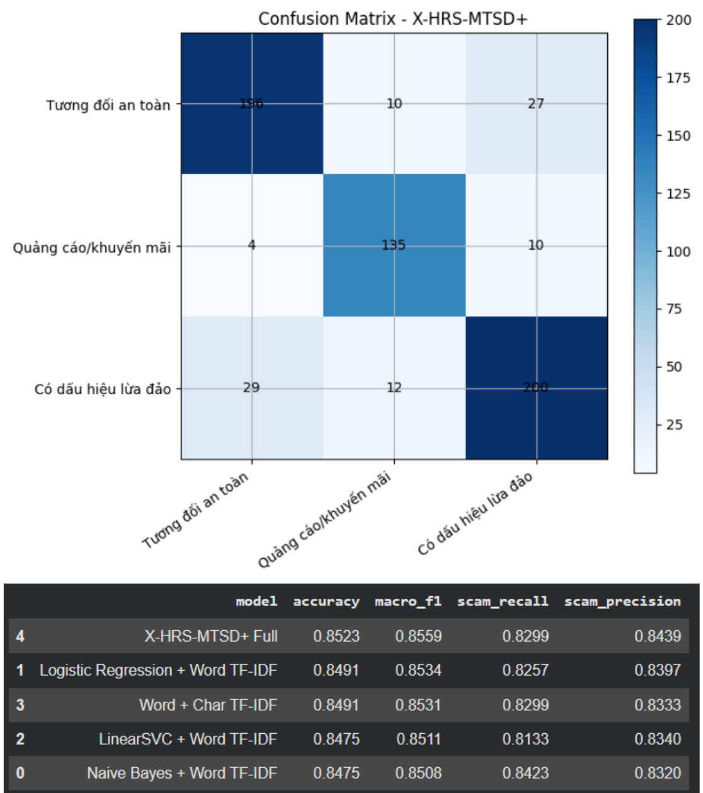
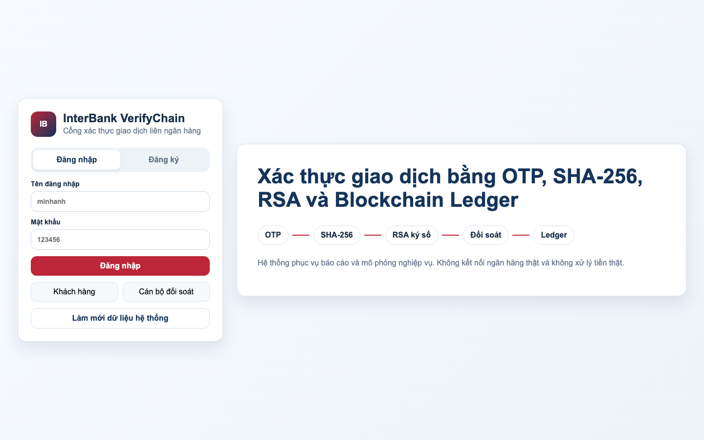

Project Portfolio · 2025 – 2026
NGUYEN HOANG PHONG
Business Analysis · Data Science & Explainable AI · Market & FinTech Research
3.45 / 4.0GPA · VNU-IS FinTech & Digital Business
6 ProjectsBA, Explainable ML, FinTech & ESG NLP
463 / 463Automated Test Cases Passed (Hanoi Homes)
ICECH 2026Co-Author · Published Proceedings
Profile Summary
Final-year Financial Technology and Digital Business student at VNU International School – Vietnam National University, Hanoi (Expected 2027). Experienced in turning ambiguous business and market problems into clear system specifications (URD, use cases, user stories, API data fields), validated datasets, and explainable ML web systems. Holds Google Business Intelligence, Google Data Analysis with Python, and Google AI professional certificates, with English proficiency at Aptis B2.
Track 01
Business & System Analysis
URD, use cases, user stories, API data field specifications, workflow modeling, and functional testing across FinTech & SaaS prototypes.
Track 02
Data Science & Explainable AI
Data cleaning, model benchmarking (CatBoost, XGBoost, Ensembles), SHAP & Local XAI, FastAPI, R Shiny, and SQLite integration.
Track 03
Market & Corporate Research
IFRS S1/S2 corporate disclosure auditing, real estate pricing driver analysis, multivariate EDA, and executive BI reporting.
Portfolio Index
Selected Projects & Published Research
| Pg |
Project / Study |
Role |
Key Verified Outcome |
| 02 |
SocialShield-VN
VN SMS & Phishing Warning System |
Team Leader · BA & ML |
X-HRS-MTSD+ (FastAPI + SQLite): 85.23% Acc, 85.59% Macro F1 on 3,114 SMS; 22 domain rules, 0–100 risk score, XAI & RBAC. |
| 03 |
Hanoi Homes
Apartment Price Estimation Web App |
ML & System Developer |
Cleaned 1,856 → 846 records (262 projects); CatBoost MAPE 14.57% + SHAP + R Shiny + SQLite; 463/463 tests passed. |
| 03 |
Orange Telecom Churn
Hybrid AI Customer Retention |
AI/ML Team Member |
Multivariate CRM EDA + Soft Voting Ensemble achieving ROC-AUC 0.90, Accuracy 92.5%, F1 0.71. |
| 04 |
RideLink Chain
Decentralized Ride-Hailing Prototype |
System Analysis & Testing |
Booking, matching & split-payment flows + API data fields; Node.js/Express + Solidity 0.8.20 Escrow + QR & hash ledger. |
| 04 |
InterBank VerifyChain
Interbank Transaction Simulation |
FinTech Systems & QA |
Customer & Reconciliation portals; Web Crypto OTP, SHA-256 + RSA signing, tamper-evident ledger, 19 QA cases (TC01–TC19). |
| 05 |
HSBC IFRS S1/S2 Study & NLP
ESG Disclosure Intelligence |
Co-Author (ICECH 2026) |
Published in ICECH 2026 Proceedings; Python hybrid retrieval pipeline (TF-IDF, BM25, Embeddings) & greenwashing checks. |
Education & Experience
VNU International School — B.S. Financial Technology & Digital Business (GPA 3.45/4.0, Expected 2027).
Ula Edu (3 mos) — Brand Management Trainee (Intern), Marketing Department.
Certifications & Languages
Google Data Analysis with Python (Nov 2026) · Google AI Professional (Sep 2026) · Google Business Intelligence · English (Aptis B2).
85.59%Macro F1 (X-HRS-MTSD+)
85.23%3-Class Accuracy
3,114Vietnamese SMS Dataset
22 RulesDomain Scam Signals
Business Problem & BA Scope
Vietnamese SMS phishing impersonates banks, police, delivery services, and e-wallets using unaccented text and urgency traps. I led requirement gathering, separated User vs. Admin RBAC, specified 5 core functional modules (Auth, SMS Check, URL Check, CSV/TXT Bulk Scan, Admin Logs), designed the SQLite schema, and defined transparent 0–100 risk-scoring rules.
Hybrid XAI Architecture (X-HRS-MTSD+)
- Feature Fusion: Word TF-IDF + Char TF-IDF + 22 handcrafted Vietnamese fraud rules (OTP, URL, money, urgency, 7 brand groups).
- Interpretable Model: One-vs-Rest Logistic Regression delivering Global & Local XAI feature explanations + K-Means campaign clustering.
- QA Automation: Built Python API test runner (30 real-world scenarios) exporting structured Excel verification reports.

Figure 1: Real SocialShield-VN User Dashboard — risk overview, active alerts, dataset KPIs (3,114 samples, 85.6% Macro F1).

Figure 2: Real-time SMS Risk Analysis (100/100 Bank Impersonation) with actionable user guidance & URL scoring.

Figure 3: Confusion Matrix & Model Benchmark (X-HRS-MTSD+ Full outperforms Logistic Regression, LinearSVC, and Naive Bayes).
FastAPISQLiteHTML / CSS / JSScikit-learnTF-IDF + 22 RulesGlobal & Local XAIK-Means ClusteringUse Cases & RBAC
1,856 → 846Validated Listings
262 ProjectsHanoi Apartment Market
14.57% MAPECatBoost (MAE 0.866 bn)
463 / 463Test Cases Passed
Data Cleaning, Modeling & Explainability
- Cleaned and deduplicated 1,856 raw Hanoi real estate listings into 846 validated records spanning 262 apartment projects.
- Benchmarked 6 ML models across project segments; selected CatBoost (MAE VND 0.866 billion, MAPE 14.57%).
- Integrated SHAP explanations so every estimated price is traceable to concrete property and location drivers.
- Connected the Python prediction engine to an R Shiny web app and SQLite database, passing 463/463 test cases.
Pipeline Verification Summary
System Bridge: Python ML Model → R Shiny Advisory UI → SQLite Persistence → Automated QA Suite (100% pass rate).
PythonCatBoostSHAPR ShinySQLiteData Cleaning
0.90Test Set ROC-AUC
92.5%Test Set Accuracy
0.71Churn Class F1-Score
Analytical Approach & Impact
- Executed multivariate EDA across telecom charges, usage behavior, and customer service call logs to isolate primary churn drivers.
- Built a Hybrid Soft Voting Ensemble combining complementary classifiers to balance recall on minority churners with high overall precision.
- Delivered prioritized risk profiles enabling proactive retention outreach before customer contract termination.
PythonScikit-learnSoft Voting EnsembleMultivariate EDACRM Analytics
Holdout Test Evaluation
Key Takeaway: Combining usage-threshold signals with call-center friction patterns substantially improved churn separability over single baseline models.
1. Ride BookingPassenger route, vehicle type, split-fare & API payload specs
2. Smart EscrowRideLinkEscrow.sol locks funds via MetaMask / Hardhat
3. Match & QRDriver accepts trip, verifies boarding via QR security code
4. Payout & AuditAutomated release/refund + tamper-evident hash ledger
BA & System Engineering Contributions
- Specified end-to-end booking, driver–rider matching, split-payment, and settlement workflows together with structured API data fields.
- Supported 3 role-based portals (Passenger, Driver, Admin) including dispute/fraud monitoring and CSV ledger export.
- Performed functional testing across booking states and escrow transitions to catch and resolve workflow logic errors.
Technical Stack & Deliverables
Full-stack Express.js backend + Solidity 0.8.20 smart contract (contracts/RideLinkEscrow.sol) running on local Hardhat (Chain ID 31337) with QR trip verification and hash-linked audit history.
API Data FieldsFunctional TestingNode.js / ExpressSolidity 0.8.20HardhatMetaMask

Figure 4: Live InterBank VerifyChain UI — OTP, SHA-256, RSA Signing & Reconciliation Ledger.
HTML5 / CSS3 / Vanilla JSWeb Crypto APISHA-256 & RSA19 Test Cases
Workflow, Cryptography & QA Suite
- Dual Portals: Separate workflows for Customers (transfer initiation, beneficiary validation, balance checks) and Reconciliation Officers (transaction audit, ledger validation, CSV export).
- Cryptographic Integrity: Time-limited OTP via browser Web Crypto API, canonical payload serialization, SHA-256 hashing, RSA digital signing & public-key verification, and hash-linked block ledger with tamper detection.
- Structured QA: Authored and verified 19 formal test cases (TC01–TC19) covering authentication guards, duplicate accounts, insufficient funds, OTP failures, settlement balances, and ledger tamper alerts.
ICECH 2026International Proceedings
4-Way HybridTF-IDF · BM25 · Jaccard · Emb.
IFRS S1 / S2Criteria-Based ESG Audit
Research Contribution & Practical Value
Co-authored a case study on HSBC’s sustainability disclosures published in the ICECH 2026 International Conference Proceedings. Translated IFRS S1/S2 sustainability disclosure standards into a structured, auditable criteria matrix, mapped multi-year ESG and financial reports, and engineered a reproducible Python NLP compliance pipeline (FinAI.ipynb) to quantify evidence coverage and surface potential narrative-vs-metric greenwashing gaps.
01. PDF Ingestpdfplumber text extraction & extraction quality diagnostics
02. ESG FilteringRelevant page filtering & overlapping chunk generation
03. Hybrid RetrievalTF-IDF + BM25 + Jaccard + Sentence Transformers fusion
04. Audit OutputsCoverage metrics, NMF topics, bootstrap CIs & HTML/CSV
Key Analytical Methods
- Criteria Mapping: Structured
ifrs_requirements.csv & quantitative indicator_value.csv for auditable alignment scoring.
- Consistency Checks: Cross-compared qualitative sustainability claims against quantitative KPIs across reporting years.
- Statistical Validation: NMF topic modeling, bootstrap confidence intervals, and sensitivity analysis.
Technical Stack
Built as a clean, reproducible Python research workflow exporting stakeholder-ready tables, visual diagnostics, and Jinja2 HTML summaries.
PythonPandas & NumPypdfplumberrank-bm25Sentence TransformersScikit-learnSciPyJinja2
Core Toolkit & Availability
Business, Process & Research Skills
URD, Use Cases, User Stories, API Data Field Specification, Functional Testing, Process Analysis (Quotation, Order Matching, Customer Routing, Receivables, BI Reporting), Corporate Report Extraction & Driver Analysis.
Data, AI & Engineering Skills
Python (pandas, NumPy, Jupyter, Scikit-learn, XGBoost, CatBoost, SHAP), SQL (basic), SQLite, FastAPI, R Shiny, Node.js/Express, Solidity/Hardhat, Excel, PowerPoint, Prompt Design & AI Team Training.
Ready to Contribute · Hanoi, Vietnam
Let’s Connect for Internship Opportunities
Business Analyst Intern · Data Science / AI Intern · Market Research Intern
phonghoang5800@gmail.com
phonghoang5800-droid.github.io
github.com/phonghoang5800-droid